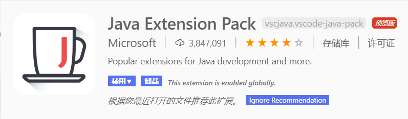

使用vscode一键编译运行Java代码
-
确保设备上已安装好Java编译环境（可以在命令行通过指令编译运行）
-
在vscode上安装插件Java Extension Pack
-
在vscode上安装插件Code Runner
-
在设置内找到并勾选在终端内运行（否则无法输入） 勾选运行前保存（也可以不勾选手动ctrl+s保存）
-
在工作文件夹下新建".vscode"文件夹，新建设置文件"settings.json"，拷贝下面的代码，并作本地化修改（大部分设置已有注释，部分是cpp的设置，可自行修改）
{
"files.defaultLanguage": "java", // ctrl+N新建文件后默认的语言
"editor.formatOnType": true, // （对于C/C++）输入分号后自动格式化当前这一行的代码
"editor.suggest.snippetsPreventQuickSuggestions": false, // clangd的snippets有很多的跳转点，不用这个就必须手动触发Intellisense了
"editor.acceptSuggestionOnEnter": "off", // 我个人的习惯，按回车时一定是真正的换行，只有tab才会接受Intellisense
// "editor.snippetSuggestions": "top", // （可选）snippets显示在补全列表顶端，默认是inline
"code-runner.runInTerminal": true, // 设置成false会在“输出”中输出，无法输入
"code-runner.executorMap": {
"java": "cd $dir && javac -encoding utf-8 $fileName && java $fileNameWithoutExt",//这步非常重要，简单来说是指定了一键编译时发送给终端的命令的形式，默认是没有-encoding utf-8的，这样会导致中文乱码，手动添加可解决这一问题
}, // 控制Code Runner命令；未注释的仅适用于PowerShell（Win10默认），文件名中有空格也可以编译运行；注释掉的适用于cmd（win7默认），也适用于PS，文件名中有空格时无法运行
"code-runner.saveFileBeforeRun": true, // run code前保存
"code-runner.preserveFocus": true, // 若为false，run code后光标会聚焦到终端上。如果需要频繁输入数据可设为false
"code-runner.clearPreviousOutput": false, // 每次run code前清空属于code runner的终端消息，默认false
"code-runner.ignoreSelection": false, // 默认为false，效果是鼠标选中一块代码后可以单独执行
}
- 在代码页右键Run Code或使用快捷键ctrl+alt+N运行。
如果run code报错，在main函数下面也有个run/debug。尝试使用那里的run